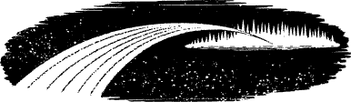

60
As you pass into the void, a sensation of unimaginable speed assaults your senses. You fly through the stellar darkness and a universe unfolds before you, like a million gems strewn upon an endless sea of black velvet. Your physical body is sheathed within a casing of pale white light, and you sense that it is a protective shell generated by your Platinum Amulet to protect you from the icy chill and airlessness of this astral starscape.
{kind=link}

You surrender yourself to the invisible currents that ebb and flow through the void and, as you glide across this immeasurable no-space, once more you consult the Tome of Darkness. The transparent page that revealed information about Shamath’s realm is now blank, but the one which follows has changed in colour and texture. Lines of glowing text have appeared on a page that is as dark as deep space. Again, using your Magnakai Discipline of Pathsmanship, you are able to decipher much of the text and you discover that it tells of ‘Avarvae the Tormentress’. It reveals that this void, which is her domain, is called ‘The Oblivion of the Tortured Souls’. You ignore the list of her cruel and evil deeds, and search out her secret name.
Unfortunately you discover that there is no name to bind her. However, you do learn that no special artefact is required to leave her realm and there are two exits: The Gates of Darkness, by which you entered, and the Bridge of the Damned. Having no desire to return to Shamath’s domain, you put away the Tome and resolve instead to find the Bridge of the Damned. Yet, as you stare across the infinite distances of this void, it is hard to dispel your fears that you may end your days lost here forever.
If you possess Shamath’s Potion, turn to 315.
If you do not possess this item, turn to 218.